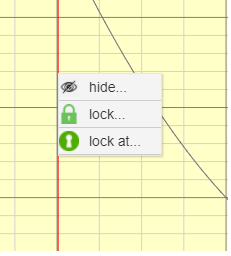
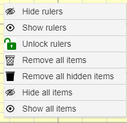

|
Plot Area context menus
Right clicking a selected ruler brings up a menu (see below) with ruler specific commands.

Click hide to hide the selected ruler.
Click lock to lock the selected ruler in its current position.
Click lock at to launch a dialog to set the position at which you would like the selected ruler locked. (Note: The position set by the dialog is validated by Grapher algorithms that keep the ruler on the curve)
NB: Rulers at the extreme edge of the Plot Area cannot be selected. Zoom or set the margin (Plot Properties > Scale Settings > Margins) to move the rulers from the edge of the Plot Area.
Right clicking in the Plot Area (not on a ruler) brings up the menu shown below.

Click Hide rulers to hide all rulers.
Click Show rulers to show all hidden rulers.
Click Unlock rulers to unlock all locked rulers.
Click Remove all items to move all plot items to the recycle bin.
Click Remove all hidden items to move all hidden plot items to the recycle bin.
Click Hide all items to hide all plot items.
Click Show all items to show all plot items.
|